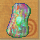
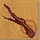
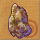

這邊的進階原料收集技能都需要使用『特製工具』才能工作
【基本產物】
（農事技能） （農事技能） （農事技能） （採集技能） （採集技能） （採集技能） （狩獵技能） （狩獵技能） （狩獵技能）  （伐木技能）  （伐木技能）  （伐木技能） （釣魚技能） （釣魚技能） |
（農事技能） （農事技能） （農事技能） （採集技能） （採集技能） （採集技能） （狩獵技能） （狩獵技能） （狩獵技能）  （伐木技能）  （伐木技能）  （伐木技能） （釣魚技能） （釣魚技能） |